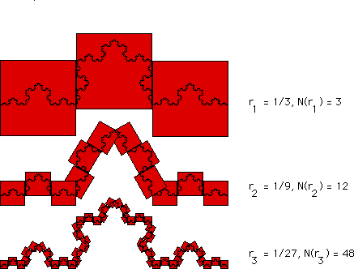

| Covering the Koch curve with smaller and
smaller boxes we see the pattern illustrated in the table on the right. |
|  |
| N(1/3) = 3 |
| N(1/9) = N((1/3)2) = 12 = 3⋅4 |
| N(1/27) = N((1/3)3) = 48 = 3⋅42 |
| and in general |
| N((1/3)n) = 3⋅4n-1 | .
|
| Here is the Log-Log plot to estimate the
box-counting dimension of the Koch curve. |
| In this case, the pattern is simple enough that we can find the
exact value of the dimension. |
|